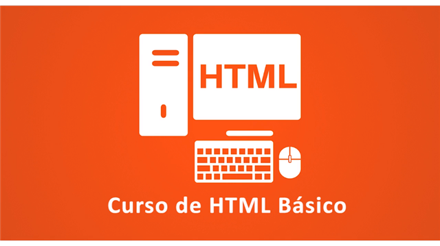

Cursos para iniciantes
Os cursos a seguir são indicados para quem está começando na programação, com foco em lógica, HTML, CSS e introdução a uma linguagem popular.
Um bom ponto de partida é um curso de HTML e CSS que apresenta a estrutura básica de páginas, tags principais e conceitos de layout.
- Curso de introdução à lógica de programação com exercícios práticos.
- Curso básico de HTML e CSS com foco em criação de páginas estáticas.
- Curso introdutório de programação em Python para iniciantes.
Para complementar, um curso introdutório de Python ajuda a praticar estruturas de decisão, repetição e manipulação de dados simples.

Cursos intermediários
Após dominar o básico, é recomendável estudar desenvolvimento web completo, frameworks e boas práticas de programação.

Um curso de JavaScript para desenvolvimento web permite criar páginas dinâmicas, interativas e com melhor experiência para o usuário.
- Curso de JavaScript focado em manipulação de DOM e eventos.
- Curso de desenvolvimento web com HTML, CSS e JavaScript integrados.
- Curso de introdução a frameworks como React ou Vue.js.
- Curso de desenvolvimento backend com uma linguagem de sua preferência.
- Curso sobre versionamento de código com Git e GitHub.
Saiba mais sobre cursos de programação
Os links abaixo direcionam para plataformas com diversos cursos de programação em diferentes níveis.
Comparação de cursos recomendados
A tabela a seguir compara alguns cursos de programação quanto ao nível, foco principal e carga horária aproximada.
| Curso | Características | Carga horária aproximada | |
|---|---|---|---|
| Nível | Foco principal | ||
| HTML e CSS para iniciantes | Iniciante | Estruturação de páginas e estilos básicos | 20 horas |
| Introdução à programação em Python | Iniciante | Lógica de programação e sintaxe básica | 25 horas |
| JavaScript para desenvolvimento web | Intermediário | Interatividade e manipulação de elementos na página | 30 horas |
| Desenvolvimento web completo | Intermediário | Front-end e noções de back-end | 40 horas |